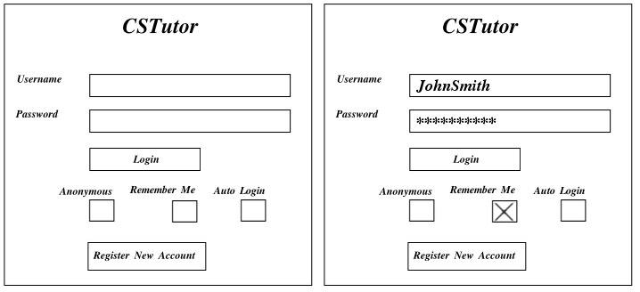

This page introduces all functionality of the Login Screen.
This scenario shows how a user (student or instructor) logs in.
CSTutor first presents the user with the login screen (see Figure 1 below).
Figure 2.2-1: Initial Login Screen
The user may type in their Username and Password then click the Login button in order to login.
Once logged in, CSTutor presents the user with either the Instructor page
or the Student page depending on their account. NOTE: Several
permissions exist that conditionally effect the user's feature set but CSTutor does not present the user
with features (buttons, options, etc) for which the user has insufficient permissions to use.
Checking the Remember Me checkbox saves the Username field such that CSTutor now automatically fills in
the Username field at startup.
Checking the Auto Login checkbox saves both the Username and Password fields such that CSTutor now automatically
fills in both fields and logs the user in. A user with Auto Login checked essentially bypasses the login screen.
A user may choose to log in anonymously by selecting the Anonymous checkbox. When this box is checked CSTutor records the statistics to an anonymous account. CSTutor keeps no identifying information about the anonymous user. The Anonymous login allows an anonymous user to continue without entering credentials.
If a user wishes to create a new account the user must click the Register New Account button. CSTutor responds by opening the New Account Registration window (see Figure 2 below).
Figure 2.2-2: New User Registration